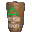
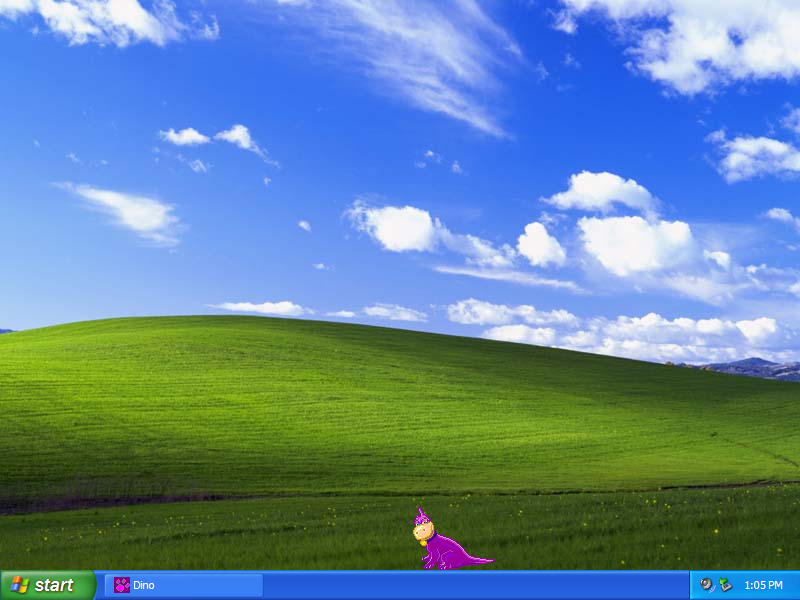

Flintstones Extras

Flintstones Cursors
Archived from an old version of totallyfreecursors.com. (repairs made when needed)
DOWNLOAD
 7 .ani/.cur files zipped (6.65 KB)
7 .ani/.cur files zipped (6.65 KB)
Flintstones Desktop Icons

DOWNLOAD
11 .ico (Windows Icon) files + readme.txt zipped (Windows) (48.6 KB)
.hqx file (Mac OS) (80.2 KB)
.bin file (Mac OS) (160 KB)
Interactive Dino Desktop Mate

DOWNLOAD
.exe file zipped (305 KB)
Flintstones Screensaver

Note: This is a 16-bit program and requires special programs to install on 64-bit Windows, such as otvdm.
DOWNLOAD
.exe file zipped (Windows) (696 KB)
.hqx file (Mac OS) (0.98 MB)
.bin file (Mac OS) (746 KB)